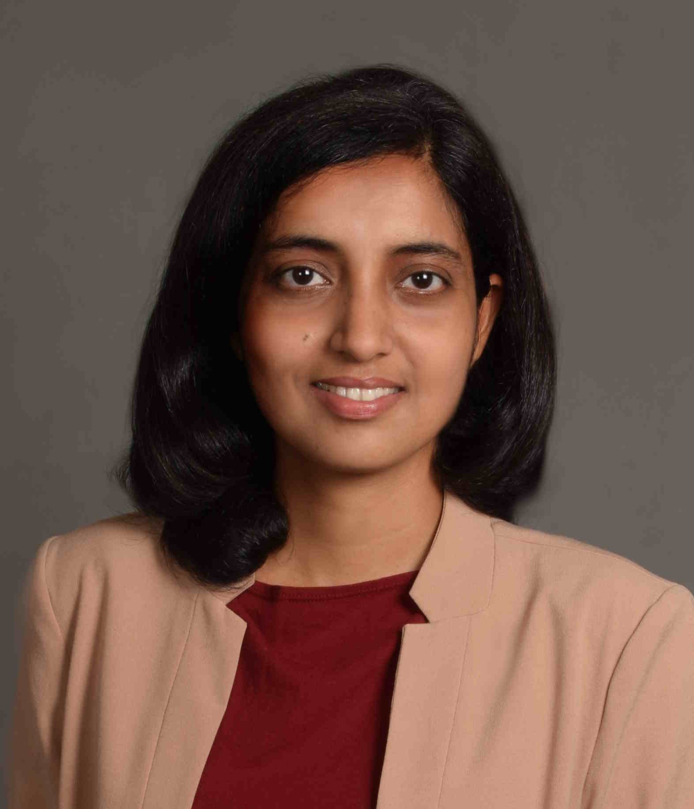

Neha Karanjkar
|  |
Indian Institute of Technology Goa, Farmagudi, Ponda, Goa 403401 |

My research interests are in modeling, simulation and optimization of Discrete-event Systems
in applications areas such as computer system design, networks and logistics. My current focus is on development of approaches and frameworks for parallel and hybrid (mixed discrete-event and continuous) simulation.
I obtained my M.Tech and Ph.D degrees from the Electrical Engineering department at IIT Bombay. Prior to joining IIT Goa, I have worked as a Post-doctoral fellow at the Robert Bosch Centre for Cyber-Physical Systems (RBCCPS), IISc Bangalore and as a Research Scientist on the development of the 'Ajit’ indigenous processor at IIT Bombay.
Updates
July 2025 A paper describing our work on automated model generation for Digital Twins has been accepted as full paper at WinterSim 2025.
March 2025 I have been awarded the Goa Rajya Vidnyanik Puraskar, an award of INR 2 Lakh constituted by DST-Goa for innovation.
June 2024 A paper describing our work on the Sitar simulation framework has been accepted as full paper at WinterSim 2024.
May 2024 PhD students Tushar Lone and Lekshmi P have been selected to receive an ACM Travel Grant of USD 1000 each to present their work at the ACM SIGSIM PADS conference.
June 2023 I was an invited speaker at Target's MultiplAI 2023 Industry conference and conducted a workshop on Open-source Powered Simulations for Enabling AI in Retail.
July 2022 Our paper on the Sitar simulation framework received the Best Paper Award at the Simultech 2022 conference.